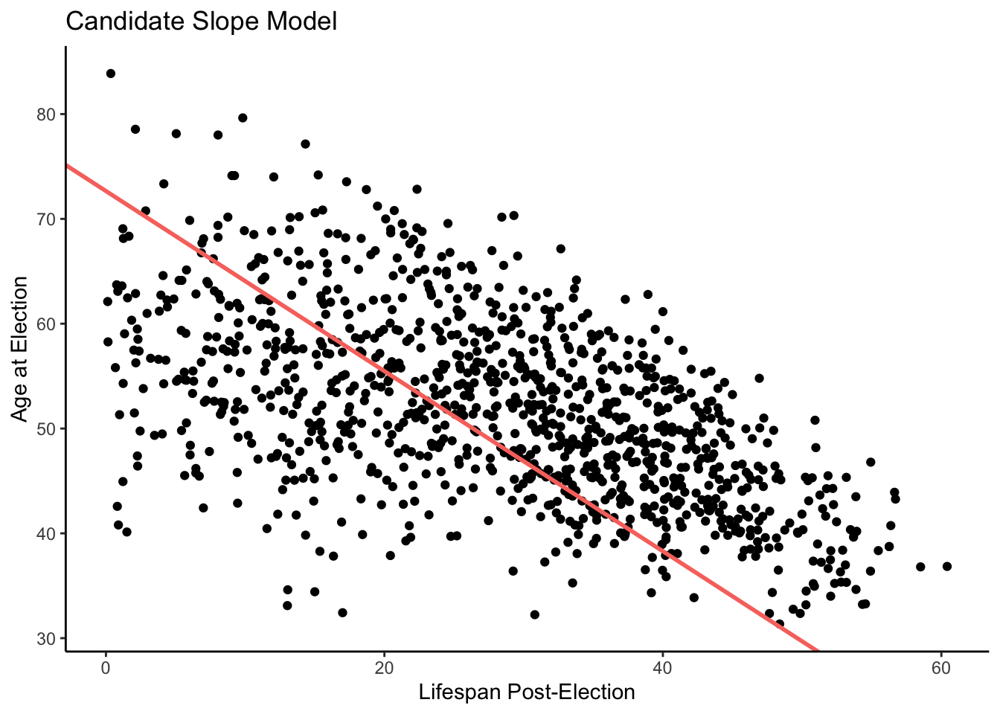
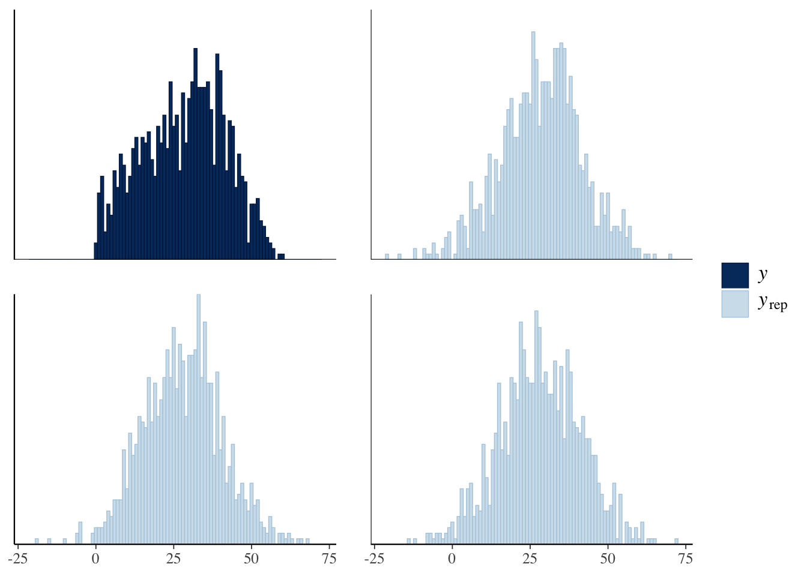
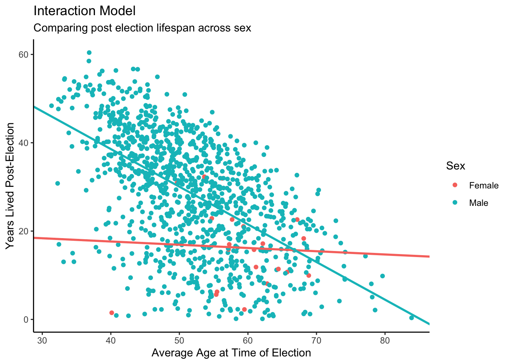
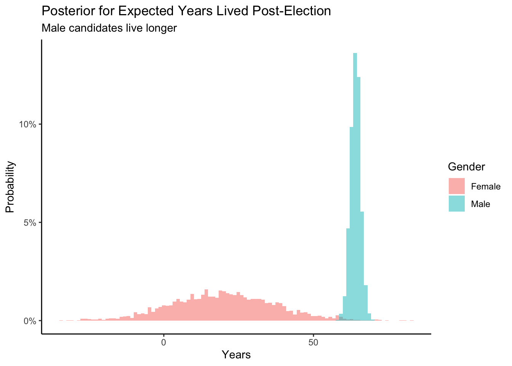
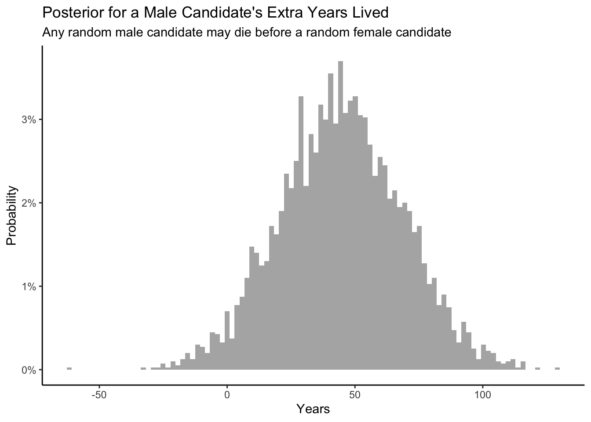

7 Five Parameters
This chapter is still a DRAFT.
Last chapter, we studied four parameters: models in which we studied multiple right-hand side variables at once. The next step in our model building education is to learn about interactions. The effect of a treatment relative to a control is almost never uniform. The effect might be bigger in women than in men, smaller in the rich relative to the poor. The technical term for such effects is “heterogeneous,” which is just Ph.D.’ese for “different.” With enough data, all effects are heterogeneous. Causal effects, at least in the social science, always vary across units. To model this reality, we rely on interactions, on allowing the effect size to differ. The same applies for predictive models. The relationship between our outcome variable \(y\) and a predictor variable \(x\) is rarely constant. The relationship varies based on the values of other variables. To take account of interactions, we need models with at least 5 parameters.
Packages:
7.1 Wisdom

Wisdom is the first Cardinal Virtue that requires the creation of a Preceptor Table, an examination of our data, and a determination, using the concept of “validity,” as to whether or not we can (reasonably!) assume that the two come from the same population.
Consider the following predictive questions:
How many years would we expect two gubernatorial candidates — one male and one female, both 10 years older than the average candidate — to live after the election? How different will their lifespans be?
Note how far we have come in the Primer. These are difficult questions, involving issues of both prediction and causation. Yet, if we follow the Cardinal Virtues, we can provide sophisticated answers.
Recall the most important aspects of Wisdom: the Preceptor Table, the EDA (exploratory data analysis), and validity of the data. As always, we start with the Preceptor Table — the table of data that would make all of our questions answerable with mere arithmetic (no inferences).
7.1.1 Preceptor Table
The Preceptor Table is the smallest possible table of data with rows and columns such that, if there is no missing data, then it is easy to estimate the quantities of interest.
To create our Preceptor Table, we need to ask ourselves a couple of questions based on our questions above.
First, do we need a causal or predictive model? In our question above we have a predictive model as we only have one outcome which is the person’s expected life expectancy based on our predictor which relates to an individual’s sex.
Second, what is the outcome? A person’s life expectancy will be the outcome. The questions, however, leave unclear details. Where are these people at? Which country? Also, at what moment in time is this experiment taking place? In order to dive deeper into these questions we need to engage in a conversation with the person that is asking us these questions. For the questions that we have at hand we will be talking about the location of Chicago, Illinois on July 1, 2012.
Third, what are the units? Our units for this scenario would be individuals because the questions are about the life expectancy of unique candidates.
Fourth, what are the covariates? In our case, a person’s sex will be a covariate as it is another factor that plays to the individual’s age and identity. The Preceptor Table must include any covariates mentioned in the question.
Fifth, do we have a treatment? No. We will be using a predictive model as discussed above and treatments will only apply to situations with causal models. A treatment is just a covariate which we can, at least in theory, manipulate, thereby creating other potential outcomes.
Our Preceptor Table:
| Preceptor Table | ||||
| ID | Outcome | Covariates | ||
|---|---|---|---|---|
| Years Lived After | Sex | Year Elected | Age at Election | |
Candidate 1 |
12 |
Female |
1967 |
63 |
Candidate 2 |
7 |
Male |
2012 |
47 |
… |
… |
… |
… |
… |
Candidate 10 |
10 |
Female |
2012 |
52 |
Candidate 11 |
11 |
Female |
2015 |
75 |
… |
… |
… |
… |
… |
Candidate N |
6 |
Male |
2015 |
68 |
We would have rows for every gubernatorial election candidate in U.S. history. We may want further details, such as election year. This is merely a sketch of our ideal dataset.
7.1.2 EDA of governors
The primer.data package includes the governors data set which features demographic information about candidates for governor in the United States. Barfort, Klemmensen, and Larsen (2020) gathered this data and concluded that winning a gubernatorial election increases a candidate’s lifespan.
glimpse(governors)Rows: 1,092
Columns: 14
$ state <chr> "Alabama", "Alabama", "Alabama", "Alabama", "Alabama", "A…
$ year <int> 1946, 1946, 1950, 1954, 1954, 1958, 1962, 1966, 1966, 197…
$ first_name <chr> "James", "Lyman", "Gordon", "Tom", "James", "William", "G…
$ last_name <chr> "Folsom", "Ward", "Persons", "Abernethy", "Folsom", "Long…
$ party <chr> "Democrat", "Republican", "Democrat", "Republican", "Demo…
$ sex <chr> "Male", "Male", "Male", "Male", "Male", "Male", "Male", "…
$ died <date> 1987-11-21, 1948-12-17, 1965-05-29, 1968-03-07, 1987-11-…
$ status <chr> "Challenger", "Challenger", "Challenger", "Challenger", "…
$ win_margin <dbl> 77.334394, -77.334394, 82.206564, -46.748166, 46.748166, …
$ region <chr> "South", "South", "South", "South", "South", "South", "So…
$ population <dbl> 2906000, 2906000, 3058000, 3014000, 3014000, 3163000, 332…
$ election_age <dbl> 38.07255, 78.54894, 48.74743, 46.54620, 46.07255, 33.2703…
$ death_age <dbl> 79.11567, 80.66530, 63.31006, 59.88227, 79.11567, 87.8193…
$ lived_after <dbl> 41.043121, 2.116359, 14.562628, 13.336071, 33.043121, 54.…There are 14 variables and 1,092 observations. In this Chapter, we will only be looking at the variables last_name, year, state, sex, lived_after, and election_age.
ch7_a <- governors |>
select(last_name, year, state, sex, lived_after, election_age)election_age and lived_after are how many years a candidate lived before and after the election, respectively. As a consequence, only politicians who are already deceased are included in this data set. This means that there are only a handful of observations from elections in the last 20 years. Most candidates from that time period are still alive and are, therefore, excluded.
One subtle issue: Should the same candidate be included multiple times? For example:
ch7_a |>
filter(last_name == "Cuomo")# A tibble: 4 × 6
last_name year state sex lived_after election_age
<chr> <int> <chr> <chr> <dbl> <dbl>
1 Cuomo 1982 New York Male 32.2 50.4
2 Cuomo 1986 New York Male 28.2 54.4
3 Cuomo 1990 New York Male 24.2 58.4
4 Cuomo 1994 New York Male 20.2 62.4For now, we leave in multiple observations for a single person.
First, let’s sample from our dataset.
ch7_a |>
slice_sample(n = 5)# A tibble: 5 × 6
last_name year state sex lived_after election_age
<chr> <int> <chr> <chr> <dbl> <dbl>
1 Ristine 1964 Indiana Male 44.6 44.8
2 Sundlun 1986 Rhode Island Male 24.7 66.8
3 Richards 1990 Texas Female 15.9 57.2
4 Turner 1946 Oklahoma Male 26.6 52.0
5 Williams 1948 Michigan Male 39.2 37.7As we might expect, sex is most often “Male”. To be more precise in inspecting our data, let’s skim() the dataset.
skim(ch7_a)| Name | ch7_a |
| Number of rows | 1092 |
| Number of columns | 6 |
| _______________________ | |
| Column type frequency: | |
| character | 3 |
| numeric | 3 |
| ________________________ | |
| Group variables | None |
Variable type: character
| skim_variable | n_missing | complete_rate | min | max | empty | n_unique | whitespace |
|---|---|---|---|---|---|---|---|
| last_name | 0 | 1 | 3 | 11 | 0 | 615 | 0 |
| state | 0 | 1 | 4 | 14 | 0 | 50 | 0 |
| sex | 0 | 1 | 4 | 6 | 0 | 2 | 0 |
Variable type: numeric
| skim_variable | n_missing | complete_rate | mean | sd | p0 | p25 | p50 | p75 | p100 | hist |
|---|---|---|---|---|---|---|---|---|---|---|
| year | 0 | 1 | 1964.85 | 13.38 | 1945.00 | 1954.00 | 1962.00 | 1974.00 | 2011.00 | ▇▆▃▂▁ |
| lived_after | 0 | 1 | 28.23 | 13.38 | 0.13 | 17.57 | 29.60 | 38.67 | 60.42 | ▃▆▇▆▂ |
| election_age | 0 | 1 | 51.72 | 8.71 | 31.35 | 45.34 | 51.36 | 57.48 | 83.87 | ▂▇▆▂▁ |
skim() groups the variable together by type, and provides some analysis for each variable. We are also given histograms of the numeric data.
Looking at the histogram for year, we see that it is skewed right — meaning that most of the data is bunched to the left and that there is a smaller tail to the right — with half of the observations from election years between 1945 and 1962. This makes sense logically, because we are only looking at deceased candidates, and candidates from more recent elections are more likely to still be alive.
In using this data set, our left-side variable will be lived_after. We are trying to understand/predict how many years a candidate will live after the election.
Show the code
ch7_a |>
ggplot(aes(x = year, y = lived_after)) +
geom_point() +
labs(title = "US Gubernatorial Candidate Years Lived Post-Election",
subtitle = "Candidates who died more recently can't have lived for long post-election",
caption = "Data: Barfort, Klemmensen and Larsen (2019)",
x = "Year Elected",
y = "Years Lived After Election") +
scale_y_continuous(labels = scales::label_number()) +
theme_classic() 
Note that there is a rough line above which we see no observations. Why might this be? When looking at the year elected and years lived post-election, there is missing data in the upper right quadrant due to the fact that it is impossible to have been elected post-2000 and lived more than 21 years. Simply put: this “edge” of the data represents, approximately, the most years a candidate could have lived, and still have died, given the year that they were elected.
The reason the data is slanted downward is because the maximum value for this scenario is greater in earlier years. That is, those candidates who ran for governor in earlier years could live a long time after the election and still have died prior to the data set creation, giving them higher lived_after values than those who ran for office in more recent years. The edge of the scatter plot is not perfectly straight because, for many election years, no candidate had the decency to die just before data collection. The reason for so few observations in later years is that fewer recent candidates have died.
To begin visualizing our lived_after data, we will inspect the difference in years lived post election between male and female candidates.
Show the code
ch7_a |>
ggplot(aes(x = sex, y = lived_after)) +
geom_boxplot() +
labs(title = "US Gubernatorial Candidate Years Lived Post-Election",
subtitle = "Male candidates live much longer after the election",
caption = "Data: Barfort, Klemmensen and Larsen (2019)",
x = "Gender",
y = "Years Lived After Election") +
scale_y_continuous(labels = scales::label_number()) +
theme_classic() 
This plot shows that men live much longer, on average, than women after the election. Is there an intuitive explanation for why this might be?
Show the code
ch7_a |>
ggplot(aes(x = election_age, y = lived_after)) +
geom_point() +
labs(title = "Longevity of Gubernatorial Candidates",
subtitle = "Younger candidates live longer",
caption = "Data Source: Barfort, Klemmensen and Larsen (2019)",
x = "Age in Years on Election Day",
y = "Years Lived After Election") +
scale_x_continuous(labels = scales::label_number()) +
scale_y_continuous(labels = scales::label_number()) +
theme_classic()
Younger candidates tend to live much longer than older candidates after election. This makes sense. It is hard for an 80 year-old candidate to live for another 40 years after the election.
7.1.3 Validity
Is the meaning of the columns consistent, i.e., can we assume validity? That is the heart of validity. To put it simply, does the column for lifespan in our Preceptor Table equate to the column for lifespan from our dataset. Again, we look to the source of our data: Barfort, Klemmensen, and Larsen (2020).
The collection of birth and death dates for winning candidates is well documented. The birth and death dates for losing candidates, however, is not as easily gathered. In fact, Barfort, Klemmensen, and Larsen (2020) had to perform independent research for this information:
“For losing candidates, we use information gathered from several online sources, including Wikipedia, The Political Graveyard…, Find a Grave… and Our Campaigns.”
This is not nearly as reliable as the data collection for candidates who won their election. And, there was a further complication:
“In a few cases, we are only able to identify the year of birth or death, not the exact date of the event. For these candidates, we impute the date as July 1 of the given year.”
For these candidates, then, our estimate for longevity will be inaccurate. We also have to hope that the birth and death dates listed on unreliable internet sources are accurate. It is possible that they are not, especially for older candidates.
The mission of this exploration is to ensure validity as much as possible — that is, to equate our columns when they are not equated themselves. In this case, because we cannot fix the issues with data collection, we accept that our estimates may be slightly skewed.
Overall, however, the assumption of validity seems reasonable. Our data and The Preceptor Table can “stack” on top of each other. We will assume that both are drawn from the same population.
7.2 Justice

Justice concerns five topics: Population Table, stability, representativeness, unconfoundedness and the mathematical structure of the data generating mechanism (DGM). After inspecting our data and deciding that it is “close enough” to our questions to be useful, we move on to Justice.
7.2.1 Population Table
The Population Table is a structure which includes a row for every unit in the population. We generally break the rows in the Population Table into three categories: the data for units we want to have (the actual data set), the data for units which we actually have (the Preceptor Table), and the data for units we do not care about (the rest of the population, not included in the data or the Preceptor Table).
By determining that the data is drawn from the same population which we are analyzing, we can go on to produce a Population Table.
| Population Table | |||||
| Source | Outcome | Covariates | |||
|---|---|---|---|---|---|
| Years Lived After | Sex | City | Year Elected | Election Age | |
… |
… |
… |
… |
… |
… |
Data |
20 |
Male |
Boston, MA |
1967 |
43 |
Data |
19 |
Male |
Boston, MA |
2012 |
67 |
… |
… |
… |
… |
… |
… |
… |
… |
… |
… |
… |
… |
Preceptor Table |
? |
Female |
Chicago, IL |
2023 |
75 |
Preceptor Table |
? |
Male |
Chicago, IL |
2023 |
50 |
… |
… |
… |
… |
… |
… |
Again, the Population Table shows the more expansive population for which we are making assumptions — this includes data from our “population”, our actual data, and the Preceptor Table.
7.2.2 Stability
Stability means that the relationship between the columns is the same for three categories of rows: the data, the Preceptor table, and the larger population from which both are drawn.
With an outcome variable such as height, it is easier to assume stability over a greater period of time. Changes in global height occur extremely slowly, so height being stable across a span of 20 years is reasonable to assume. Can we say the same for this example, where we are looking at years lived post-election?
Lifespan changes over time. In fact, between 1960 and 2015, life expectancy for the total population in the United States increased by almost 10 years from 69.7 years in 1960 to 79.4 years in 2015. Therefore, our estimates for the future may need some adjustment — that is, to add years to our predicted life expectancy to account for a global change in lifespan over time.
When we are confronted with this uncertainty, we can consider making our timeframe smaller. After all, if we confined the data to candidates post-1980, we would expect more stability in lifespan. This modification may be appropriate, but it limits our data. Stability, in essence, allows us to ignore the issue of time.
Alternatively, if we believe that it is unlikely that our columns are stable, we have two choices. First, we abandon the experiment. If we believe our data is useless, so is our experiment. Second, we can choose to provide a sort of warning message with our conclusions: this is based on data from ten years ago, but that was the most recent data available to us.
7.2.3 Representativeness
Is our data representative of the population? The population is not the set of candidates for which we have data. That is the dataset. The population is the larger — potentially much larger — set of individuals about whom we want to make inferences. The parameters in our models refer to the population, not to the dataset.
Consider a simple example. Define \(\mu\) as the average number of years lived by candidates for governor after Election Day. Can we calculate \(\mu\) from our data? No! There are many candidates for governor who are still alive, who are not included in our data even though they are part of the “population” we want to study. \(\mu\) can not be calculated. It can only be estimated.
Another problem is that we would like to estimate the effect of winning on lifespan in present day. Because our data excludes the most recent candidates (since they are still alive), our predictions will not mirror the future as well as we may hope.
Even though the original question is about “gubernatorial candidates” in general, and does not specifically refer to the United States, we will assume that the data we have for US governors is representative enough of the population we are interested in (global politicians) that the exercise is useful. If we did not believe that, then we should stop right now. The major part of Wisdom is deciding what questions you can’t answer because of the data you just don’t have.
The truth is: in the social sciences, there is never a perfect relationship between the data you have and the question you are trying to answer. Data for gubernatorial candidates in the past is not an analog for gubernatorial candidates today. Nor is it the same as the data for candidates in other countries. Yet, this data is relevant. Right? It is certainly better than nothing.
Generally speaking, using not-perfect data is better than using no data at all.
Of course, this is not always true. If we wanted to predict lifespans of gubernatorial candidates in the U.S., and our data was from lifespans of presidential candidates in France… we would be better off not making any predictions at all. If the data won’t help, don’t use the data.
After looking at Barfort, Klemmensen, and Larsen (2020), the source for our dataset, we see that:
“We collect data… for all candidates running in a gubernatorial election from 1945 to 2012. We limit attention to the two candidates who received the highest number of votes.”
This data is, then, highly representative of gubernatorial candidates, as it includes every candidate from 1945 to 2012. However, there is one large caveat: only the two candidates with the most votes are included in the dataset. This is unfortunate, as we would ideally look at all gubernatorial candidates (regardless of votes). Regardless, we still deem the dataset to be representative enough of our larger population.
Generally: if there was no chance that a certain type of person would have been in this experiment, we cannot make an assumption for that person.
7.3 Courage

Courage centers around the creation of the data generating mechanism, i.e., our fitted model. We often use stan_glm() when we want to create a fitted model. With stan_glm() we can generate generalized linear or logistic models with optional prior distributions for the coefficients, intercept, and auxiliary parameters.
7.3.1 sex
Within this section we will dive deeper into a candidate’s sex and how that may effect our question at hand.
7.3.1.1 Mathematics
In this regression, our mathematical formula is:
\[ lived\_after_i = \beta_0 + \beta_1 male_i + \epsilon_i\]
\(\beta_0\) is the intercept. In this type of model, our intercept represents the the variable which is not represented in the model. Therefore, the intercept value represents those who are not male (females).
\(\beta_1\) only affects the outcome when the candidate is male. When the candidate is a male, we add the coefficient for male to the intercept value, which gives us the average lifespan of a male gubernatorial candidate after an election.
7.3.1.2 Fitted Model
With the help of Courage we can translate this math into code.
To get posterior distributions for our parameters, we will use stan_glm(), just as we did in Chapter 4. Let’s regress lived_after on sex to see how candidates’ post-election lifespans differ by sex with the help of mathematics first.
fit_1 <- stan_glm(data = ch7_a,
formula = lived_after ~ sex,
refresh = 0,
seed = 76)print(fit_1, detail = FALSE) Median MAD_SD
(Intercept) 16.1 2.9
sexMale 12.3 2.9
Auxiliary parameter(s):
Median MAD_SD
sigma 13.3 0.3 As we can see \(\beta_0\) is our intercept, around 16 years.
We do not have a value for female. However we do have an intercept. sexMale is the median age of male candidates after winning an election. The MAD_SD for each parameter is a measure of the variability of our posterior distributions for that parameter. Speaking roughly, 95% of the mass of a posterior probability distribution is located within +/- 3 MAD_SDs from the median. Typically we don’t want to consider parameters that are under 2 because they tend to show that the distribution of data may not be as important. However, there are several times where this case may not be accurate, and we will need to use parameters that have a MAD_SD of under 2.
7.3.2 election_age
To begin, let’s model candidate lifespan after the election as a function of candidate lifespan prior to the election with our mathematics.
7.3.2.1 Mathematics
The math that we have to calculate is fairly simple:
\[ lived\_after_i = \beta_0 + \beta_1 election\_age_i + \epsilon_i \]
with \(\epsilon_i \sim N(0, \sigma^2)\).
\(lived\_after_i\) is the number of years lived after the election for candidate \(i\).
\(election\_age_i\) is the number of years lived before the election for candidate \(i\).
\(\epsilon_i\) is the “error term,” the difference between the actual years-lived for candidate \(i\) and the modeled years-lived. \(\epsilon_i\) is normally distributed with a mean of 0 and a standard deviation of \(\sigma\).
The key distinction is between:
Variables, always scripted with \(i\), whose values (potentially) vary across individuals.
Parameters, never scripted with \(i\), whose values are constant across individuals.
Why do we use \(lived\_after_i\) in this formula instead of \(y_i\)? The more often we remind ourselves about the variable’s actual substance, the better. But there is another common convention: to always use \(y_i\) as the symbol for the dependent variable. It would not be unusual to describe this model as:
\[ y_i = \beta_0 + \beta_1 election\_age_i + \epsilon_i\]
Both of our mathematics mean the same.
Either way, \(\beta_0\) is the “intercept” of the regression, the average value for the population of \(lived\_after\), among those for whom \(election\_age = 0\).
\(\beta_1\) is the “coefficient” of \(election\_age\). When comparing two individuals, the first with an \(election\_age\) one year older than the second, we expect the first to have a \(lived\_after\) value \(\beta_1\) different from the second. In other words, we expect the older to have fewer years remaining, because \(\beta_1\) is negative. Again, this is the value for the population from which our data is drawn.
There are three unknown parameters — \(\beta_0\), \(\beta_1\) and \(\sigma\) — just as with the models we used in Chapter 5. Before we get to the five parameter case, it is useful to review this earlier material.
You may recall from middle school algebra that the equation of a line is \(y = m x + b\). There are two parameters: \(m\) and \(b\). The intercept \(b\) is the value of \(y\) when \(x = 0\). The slope coefficient \(m\) for \(x\) is the increase in \(y\) for every one unit increase in \(x\). When defining a regression line, we use slightly different notation but the fundamental relationship is the same.
7.3.2.2 Fitted Model
Now we want to use stan_glm() to convert our mathematics into code through a fitted model.
fit_2 <- stan_glm(data = ch7_a,
formula = lived_after ~ election_age,
refresh = 0,
seed = 9)The variable before the tilde,
lived_after, is our outcome.The only explanatory variable is
election_age. This variable can consist of several different integers.Recall that our model is linear. However, we don’t have to specify that the
familywe are going to use isgaussianbecause that is the default input that is assumed within these fitted models.
As we discussed in Chapter 5, the most common term for a model like this is a “regression.” We have “regressed” lived_after, our dependent variable, on election_age, our (only) independent variable.
Consider someone who is about 40 years old on Election Day. We have a score or more data points for candidates around that age. This area is highlighted by the red box on our plot. As we can see, two died soon after the election. Some of them lived for 50 or more years after the election. Variation fills the world. However, the fitted line tells us that, on average, we would expect a candidate that age to live about 37 years after the election.
This is a descriptive model, not a causal model. Remember our motto from Chapter Chapter 1: No causation without manipulation. There is no way, for person \(i\), to change the years that she has been alive on Election Day. On the day of this election, she is X years old. So, there are not two (or more) potential outcomes. Without more than one potential outcome, there can not be a causal effect.
Given that, it is important to monitor our language. We do not believe that that changes in election_age “cause” changes in lived_after. That is obvious. But there are some words and phrases — like “associated with” and “change by” — which are too close to causal. (And which we are guilty of using just a few paragraphs ago!) Be wary of their use. Always think in terms of comparisons when using a predictive model. We can’t change election_age for an individual candidate. We can only compare two candidates (or two groups of candidates).
7.3.3 election_age and sex
In this model, our outcome variable continues to be lived_after, but now we will have two different explanatory variables: election_age and sex. Note that sex is a categorical explanatory variable and election_age is a continuous explanatory variable. This is the same type of model — parallel slopes — as we saw in Chapter 6.
7.3.3.1 Mathematics
\[ lived\_after_i = \beta_0 + \beta_1 male_i + \beta_2 c\_election\_age_i + \epsilon_i \]
But wait! The variable name is sex, not male. Where does male come from?
The answer is that male is an indicator variable, meaning a 0/1 variable. male takes a value of one if the candidate is “Male” and zero otherwise. This is the same as the \(male_i\) variable used in the previous two examples. An indicator variable signals that we have something that deals with a factor, category, or ennumerated type. While index variables are those that allow us to stack and align data, eliminating the need to assign specific columns for different variables
The outcome variable is \(lived\_after_i\), the number of years a person is alive after the election. \(male_i\) is one of our explanatory variables. If we are predicting the number of years a male candidate lives after the election, this value will be 1. When we are making this prediction for female candidates, this value will be 0. \(c\_election\_age_i\) is our other explanatory variable. It is the number of years a candidate has lived before the election, scaled by subtracting the average number of years lived by all candidates.
\(\beta_0\) is the average number of years lived after the election for women, who on the day of election, have been alive the average number of years of all candidates (i.e. both male and female). \(\beta_0\) is also the intercept of the equation. In other words, \(\beta_0\) is the expected value of \(lived\_after_i\), if \(male_i = 0\) and \(c\_election\_age_i = 0\).
\(\beta_1\) is almost meaningless by itself. The only time it has meaning is when its value is connected to our intercept (i.e. \(\beta_0 + \beta_1\)). When the two are added together, you get the average number of years lived after the election for males, who on the day of election, have been alive the average number of years for all candidates.
\(\beta_2\) is, for the entire population, the average difference in \(lived\_after_i\) between two individuals, one of whom has an \(c\_election\_age_i\) value of 1 greater than the other.
7.3.3.2 Fitted Model
Let’s translate the model into code.
fit_3 <- stan_glm(data = ch7_a,
formula = lived_after ~ sex + election_age,
refresh = 0,
seed = 12)print(fit_3, detail = FALSE) Median MAD_SD
(Intercept) 66.0 3.2
sexMale 6.1 2.4
election_age -0.8 0.0
Auxiliary parameter(s):
Median MAD_SD
sigma 11.1 0.2 Looking at our results, you can see that our intercept value is around 66. The average female candidate, who had been alive the average number of years of all candidates, would live another 66 years or so after the election.
Note that sexMale is around 6. This is our coefficient, \(\beta_1\). We need to connect this value to our intercept value to get something meaningful. Using the formula \(\beta_0 + \beta_1\), we find out that the number of years the average male candidate — who, on the day of election, is the average age of all candidates — would live is around 72 years.
Now take a look at the coefficient for \(c\_election\_age_i\), \(\beta_2\). The median of the posterior, -0.8, represents the slope of the model. When comparing two candates who differ by one year in election_age, we expect that they will differ by -0.8 years in lived_after. It makes sense that this value is negative. The more years a candidate has lived, the fewer years the candidate has left to live. So, for every extra year a candidate is alive before an election, their lifespan after the election will be 0.8 years lower, on average.
We will now show you the parallel slopes model, which was created using the same process explained in the prior chapter. All we’ve done here is extracted the values for our intercepts and slopes, and separated them into two groups. This allows us to create a geom_abline object that takes a unique slope and intercept value, so we can separate the male and female observations.
# A tibble: 3 × 2
term estimate
<chr> <dbl>
1 (Intercept) 66.0
2 sexMale 6.15
3 election_age -0.847Warning: Using `size` aesthetic for lines was deprecated in ggplot2 3.4.0.
ℹ Please use `linewidth` instead.
7.3.4 election_age, sex and election_age*sex
Let’s create another model. This time, however, the numeric outcome variable of lived_after is a function of the two explanatory variables we used above, election_age and sex, and of their interaction. To look at interactions, we need 5 parameters, which is why we needed to wait until this chapter to introduce the concept.
7.3.4.1 Mathematics
\[ lived\_after_i = \beta_0 + \beta_1 male_i + \beta_2 c\_election\_age_i + \\ \beta_3 male_i * c\_election\_age_i + \epsilon_i \]
Our outcome variable is still \(lived\_after_i\). We want to know how many years a candidate will live after an election. Our explanatory variables as the same as before. \(male_i\) is one for male candidates and zero for female candidates. \(c\_election\_age_i\) the number of years a candidate has lived before the election, relative to the average value for all candidates. In this model, we have a third predictor variable: the interaction between \(male_i\) and \(c\_election\_age_i\).
\(\beta_0\) is the average number of years lived after the election for women, who on the day of election, have been alive the average number of years of all candidates. In a sense, this is the same meaning as in the previous model, without an interaction term. But, always remember that the meaning of a parameter is conditional on the model in which it is embedded. Even if a parameter is called \(\beta_0\) in two different regressions does necessitate that it means the same thing in both regressions. Parameter names are arbitrary, or at least simply a matter of convention.
\(\beta_1\) does not have a simple interpretation as a stand-alone parameter. It is a measure of how different women are from men. However, \(\beta_0 + \beta_1\) has a straightforward meaning exactly analogous to the meaning of \(\beta_0\). The sum is the average number of years lived after the election for men, who on the day of election, have been alive the average number of years of all candidates.
\(\beta_2\) is the coefficient of \(c\_election\_age_i\). It it just the slope for women. It is the average difference in \(lived\_after_i\) between two women, one of whom has an \(c\_election\_age_i\) value of 1 greater than the other. In our last example, \(\beta_2\) was the slope for the whole population. Now we are different slopes for different genders.
\(\beta_3\) alone is difficult to interpret. However, when it is added to \(\beta_2\), the result in the slope for men.
7.3.4.2 Fitted Model
With the help of Courage we can translate all of the math from above into code.
fit_4 <- stan_glm(data = ch7_a,
formula = lived_after ~ sex*election_age,
refresh = 0,
seed = 13)print(fit_4, detail = FALSE) Median MAD_SD
(Intercept) 20.4 20.7
sexMale 52.0 20.8
election_age -0.1 0.4
sexMale:election_age -0.8 0.4
Auxiliary parameter(s):
Median MAD_SD
sigma 11.1 0.2 The intercept has increased. \(\beta_0\) is around 20. This is the intercept for females. It still means the average number of years lived after the election for women is 20 or so. Our sexMale coefficient, \(\beta_1\), refers to the value that must be added to the intercept in order to get the average for males. When calculated, the result is 72. Keep in mind, however, that these values only apply if \(c\_election\_age_i = 0\), if, that is, candidate \(i\) is around 52 years old.
The coefficient for \(c\_election\_age_i\), \(\beta_2\), is -0.1. What does this mean? It is the slope for females. So, when comparing two female candidates who differ by one year in age, we expect that the older candidate will live 0.1 years less. Now direct your attention below at the coefficient of sexMale:election_age, \(\beta_3\), which is -0.8. This is the value that must be added to the coefficient of \(c\_election\_age_i\) (recall \(\beta_2 + \beta_3\)) in order to find the slope for males. When the two are added together, this value, or slope, is about -0.9. When comparing two male candidates who differ in age by one year, we expect the older candidate to live about 0.9 years less.
Key point: The interpretation of the intercepts only apply to candidates for whom \(c\_election\_age_i = 0\). Candidates who are not 52 years-old will have a different expected number of years to live. The interpretation of the slope applies to everyone. In other words, the relationship between \(lived\_after_i\) and \(c\_election\_age_i\) is the same, regardless of your gender or how old you are.
The posterior:
fit_4 |>
as_tibble() |>
mutate(male_years = `(Intercept)` + sexMale) |>
rename(female_years = `(Intercept)`) |>
select(female_years, male_years) |>
pivot_longer(cols = female_years:male_years,
names_to = "parameters",
values_to = "years") |>
ggplot(aes(years, fill = parameters)) +
geom_histogram(aes(y = after_stat(count/sum(count))),
alpha = 0.5,
bins = 100,
position = "identity") +
labs(title = "Posterior for Years Lived After the Election",
subtitle = "Men live longer",
x = "Average Years Lived Post Election",
y = "Probability",
fill = "Parameters") +
scale_x_continuous(labels = scales::number_format()) +
scale_y_continuous(labels = scales::percent_format()) +
theme_classic()
Again, we do not recommend working directly with parameters. The above analysis would be much easier with posterior_epred(), as we will see in the Temperance Section.
Male candidates live longer on average than female candidates. Note, also, that the average years to live after the election for females is about 20 with this model. With the previous model, it was 66 years. Why the difference? The interpretation of “average” is different! In the previous model, it was the average for all women. In this model, it is the average for all 52 years-old women. Those are different things, so we should hardly be surprised by different posteriors.
7.3.5 Interaction model
Recall the parallel slopes model that we created in Chapter 6. Another visualization we can create, one that also uses slopes and intercepts for our model, is the interaction model. In this model, the slopes for our two groups are different, creating a non-parallel visualization.
The process for creating the interaction model is similar to creating the parallel slopes model. Let us begin the same way — by tidying our data and inspecting it.
# First, we will tidy the data from our model and select the term and estimate.
# This allows us to create our regression lines more easily.
tidy <- fit_4 |>
tidy() |>
select(term, estimate)
tidy# A tibble: 4 × 2
term estimate
<chr> <dbl>
1 (Intercept) 20.4
2 sexMale 52.0
3 election_age -0.0753
4 sexMale:election_age -0.781 After tidying our data, we will extract values and assign sensible names for later use. Note that this is identical to the process from Chapter 6, with the addition of a fourth term (the interaction term):
# Extract and name the columns of our tidy object. By calling tidy$estimate[1],
# we are telling R to extract the first value from the estimate column in our
# tidy object.
intercept <- tidy$estimate[1]
sex_male <- tidy$estimate[2]
election_age <- tidy$estimate[3]
interaction_term <- tidy$estimate[4]Now that we have extracted our values, we will create the intercept and slope values for our two different groups, females and males. Recall the following details about finding slopes and intercepts in an interaction model:
- The intercept is the intercept for females. It represents the average number of years lived after the election for females.
- Our
sexMalecoefficient refers to the value that must be added to the intercept in order to get the average years lived post-election for males. - The coefficient for \(c\_election\_age_i\) is the slope for females.
- The coefficient of
sexMale:election_ageis the value that must be added to the coefficient of \(c\_election\_age_i\) in order to find the slope for males.
# Recall that the intercept and the estimate for election_age act as the
# estimates for female candidates only. Accordingly, we have assigned those
# values (from the previous code chunk) to more sensible names: female_intercept
# and female_slope.
female_intercept <- intercept
female_slope <- election_age
# To find the male intercept, we must add the intercept for the estimate for
# sex_male. To find the male slope, we must add election_age to our
# interaction term estimate.
male_intercept <- intercept + sex_male
male_slope <- election_age + interaction_termAfter creating objects for our different intercepts and slopes, we will now create the interaction model using geom_abline() for a male and female line.
# From the ch7_a data, create a ggplot object with election_age as the x-axis
# and lived_after as the y-axis. We will use color = sex.
ggplot(ch7_a, aes(x = election_age, y = lived_after, color = sex)) +
# Use geom_point to show the datapoints.
geom_point() +
# Create a geom_abline object for the female intercept and slope. Set the
# intercept qual to our previously created female_intercept, while setting
# slope equal to our previously created female_slope. The color call is for
# coral, to match the colors used by tidyverse for geom_point().
geom_abline(intercept = female_intercept,
slope = female_slope,
color = "#F8766D",
size = 1) +
# Create a geom_abline object for the male values. Set the intercept equal to
# our previously created male_intercept, while setting slope equal to our
# previously created male_slope. The color call is for teal, to match the
# colors used by tidyverse for geom_point().
geom_abline(intercept = male_intercept,
slope = male_slope,
color = "#00BFC4",
size = 1) +
# Add the appropriate titles and axis labels.
labs(title = "Interaction Model",
subtitle = "Comparing post election lifespan across sex",
x = "Average Age at Time of Election",
y = "Years Lived Post-Election",
color = "Sex") +
theme_classic()
This is our final interaction model! There are some interesting takeaways. First, we may note that there are far fewer data points for female candidates — a concern we previously mentioned. It makes sense, then, that the slope would be less dramatic when compared with male candidates. We also see that most female candidates run when they are older, as compared with male candidates. This might explain why our intercept for years lived post-election is lower for female candidates.
The male line seems more sensible, as we might expect with far more datapoints. For male candidates, we see a clear (logical) pattern: the older candidates are at the time of election, the less years post-election they live. This makes sense, as we are limited by the human lifespan.
7.4 Temperance

Courage gave us the fitted model. With Temperance we can create posteriors of the quantities of interest. We should be modest in the claims we make.
Recall the questions with which we began the chapter:
How long will two political candidates — one male and one female, both 10 years older than the average candidate — live after the election? How different will their lifespans be?
These questions are, purposely, less precise than the ones we tackled in Chapters Chapter 4 and Chapter 5, written more in a conversational style. This is how normal people talk.
However, as data scientists, our job is to bring precision to these questions. There are two commonsense interpretations. First, we could be curious about the expected values for these questions. If we averaged the data for a thousand candidates like these, what would the answer be? Second, we could be curious about two specific individuals. How long will they live? Averages involve questions about parameters. The fates of individuals require predictions. Those are general claims, violated too often to be firm rules. Yet, they highlight a key point: expected values are less variable than individual predictions.
To calculate expected values, use posterior_epred(). To forecast for individuals, use posterior_predict().
7.4.1 Expected values
Consider the “on average” interpretation first. The answer begins with the posterior distributions of the parameters in fit_4.
pe <- posterior_epred(object = fit_4,
newdata = newobs) |>
as_tibble() |>
rename("Male" = `1`,
"Female" = `2`)pe |>
pivot_longer(cols = Male:Female,
names_to = "Gender",
values_to = "years") |>
ggplot(aes(years, fill = Gender)) +
geom_histogram(aes(y = after_stat(count/sum(count))),
alpha = 0.5,
bins = 100,
position = "identity") +
labs(title = "Posterior for Expected Years Lived Post-Election",
subtitle = "Male candidates live longer",
x = "Years",
y = "Probability") +
scale_x_continuous(labels =
scales::number_format(accuracy = 1)) +
scale_y_continuous(labels =
scales::percent_format(accuracy = 1)) +
theme_classic()
Looking at our posterior probability distributions above, we can see that male candidates are expected to live longer. But how much longer? Does the initial age affect the posterior for expected years after the candidate’s election? As in previous chapters, we can manipulate distributions in, more or less, the same way that we manipulate simple numbers. If we want to know the difference between two posterior distributions, we can simply subtract.
pe <- posterior_epred(object = fit_4,
newdata = newobs) |>
as_tibble() |>
mutate(diff = `1` - `2`)pe |>
ggplot(aes(diff)) +
geom_histogram(aes(y = after_stat(count/sum(count))),
alpha = 0.5,
bins = 100,
position = "identity") +
labs(title = "Posterior for Expected Additional Male Years Lived",
subtitle = "Male candidates live about 4 years longer",
x = "Expected Additional Years Lived Post Election",
y = "Probability") +
scale_x_continuous(labels = scales::number_format(accuracy = 1)) +
scale_y_continuous(labels = scales::percent_format(accuracy = 1))+
theme_classic()
The average value of the difference in years-to-live is probably positive, with the most likely value being around 45 years. But there still a 1% chance the true value is less than zero, i.e., that we should expect female candidates to live longer.
Instead of using posterior_epred(), we could have answered these questions by using the posterior probability distributions for the parameters in the model, along with some simple math. Don’t do this! First, you are much more likely to make a mistake. Second, this approach does not generalize well to complex models with scores of parameters and their interactions.
7.4.2 Individual predictions
If, instead, we interpret the question as asking for a prediction for a small number of individuals, then we need to use posterior_predict().
With the help of the posterior predictive check we can run a “fake-data” simulation upon our fitted model that generates a distribution based on the variables at hand. With the help of this check we can view our similar our distribution is when compared with the “fake-data” simulation and the actual data. Use posterior_predict() to create draws from the posterior probability distribution for our prediction for these cases. posterior_predict() takes two arguments: the model for which the simulations should be run, and a tibble indicating the covariate values for the individual(s) we want to predict. In this case, we are using the fit_4 model and the tibble is the one we just created above. In other words, the inputs for posterior_predict() and posterior_epred() are identical.
pp <- posterior_predict(object = fit_4,
newdata = newobs) |>
as_tibble() |>
rename("Male" = `1`,
"Female" = `2`)
pp # A tibble: 4,000 × 2
Male Female
<dbl> <dbl>
1 80.0 41.1
2 58.3 15.4
3 65.2 17.0
4 74.0 38.4
5 46.0 67.8
6 56.6 20.4
7 54.4 0.763
8 74.7 2.93
9 46.5 12.5
10 69.1 -1.22
# ℹ 3,990 more rowsThe resulting tibble has 2 columns, the first for a male candidate and the second for female candidate. Both columns are draws from the posterior predictive distributions. In both cases, the forecasts depend on the values of all the covariates. That is, we would provide a different forecast if the candidates were younger or older.
Let’s look at the posterior predictive distribution for each candidate.
pp |>
pivot_longer(cols = Male:Female,
names_to = "Gender",
values_to = "years") |>
ggplot(aes(years, fill = Gender)) +
geom_histogram(aes(y = after_stat(count/sum(count))),
alpha = 0.5,
bins = 100,
position = "identity") +
labs(title = "Posterior for a Candidate's Years Lived Post-Election",
subtitle = "Individual lifespans have a great deal of variation",
x = "Years Lived Post Election",
y = "Probability") +
scale_x_continuous(labels = scales::number_format()) +
scale_y_continuous(labels =
scales::percent_format(accuracy = 1)) +
theme_classic()
There is a big overlap in the predictions for individuals while, at the same time, there is much less overlap in the averages. Random stuff happens to an individual all the time. Random stuff cancels out when you take the average for many individuals. Consider the difference in the posterior predictive distributions for the two individuals.
pp |>
mutate(diff = Male - Female) |>
ggplot(aes(diff)) +
geom_histogram(aes(y = after_stat(count/sum(count))),
alpha = 0.5,
bins = 100,
position = "identity") +
labs(title = "Posterior for a Male Candidate's Extra Years Lived",
subtitle = "Any random male candidate may die before a random female candidate",
x = "Years",
y = "Probability") +
scale_x_continuous(labels = scales::number_format()) +
scale_y_continuous(labels =
scales::percent_format(accuracy = 1)) +
theme_classic()
In words, we would predict that the male candidate would live longer than the female candidate. By how much? Well, that number is an unknown parameter. By looking at our posterior above, our best estimate is about 44.6 years. However, it is quite possible that, for any given male/female candidates, the female will live longer.
pp |>
mutate(diff = Male - Female) |>
summarize(f_live_longer = sum(diff < 0),
total = n(),
f_live_longer / total)# A tibble: 1 × 3
f_live_longer total `f_live_longer/total`
<int> <int> <dbl>
1 107 4000 0.0268In fact, there is a 4 in 10 chance that the female candidate lives longer.
Note what is the same and what is different when we move from a question about averages to a question about individuals. In both cases, the most likely value is about the same. That is, the average behavior is the same as our expected value for any given individual. But the uncertainty is much greater for an individual prediction. The chance of the true average for male candidates being less than that for female candidates is low. Yet, for any individual pair of candidates, it would not even be slightly surprising for the female candidate to outlive the male candidate. Individuals vary. Averages never tell the whole story.
7.4.3 Expectation versus Individual Variation
Let’s compare the results from posterior_epred() and posterior_predict() for this scenario directly. Most of this code is the same as what we have shown you above, but we think it is useful to look at everything together.
newobs <- tibble(sex = c("Male", "Female"),
election_age = 10)
pe <- posterior_epred(fit_4,
newdata = newobs) |>
as_tibble() |>
mutate(diff = `1` - `2`)
pp <- posterior_predict(fit_4,
newdata = newobs) |>
as_tibble() |>
mutate(diff = `1` - `2`)
tibble(Expectation = pe$diff,
Prediction = pp$diff) |>
pivot_longer(cols = Expectation:Prediction,
names_to = "Type",
values_to = "years") |>
ggplot(aes(years, fill = Type)) +
geom_histogram(aes(y = after_stat(count/sum(count))),
alpha = 0.5,
bins = 100,
position = "identity") +
labs(title = "Posterior for Expected and Individual Male Advantage",
subtitle = "Expected male advantage is much more precisely estimated",
x = "Additional Years Lived Post Election",
y = "Probability") +
scale_x_continuous(labels = scales::number_format()) +
scale_y_continuous(labels =
scales::percent_format(accuracy = 1)) +
theme_classic()
Expected values vary much less than predictions. The above chart makes that easy to see. We are somewhat sure that the true underlying average for the numbers of years that male candidates live post-election is more than female candidates. But, for any two individual candidates, there is a good chance that that the female candidate will live longer. We can not ignore \(\epsilon\) when predicting the outcome for individuals. When estimating expected values or long-run averages, the \(\epsilon\)’s cancel out.
7.4.4 Testing
“Tests,” “testing,” “hypothesis tests,” “tests of significance,” and “null hypothesis significance testing” all refer to the same concept. We will refer to this collection of approaches as NHST, a common abbreviation derived from the initials of the last phrase. Wikipedia provides an overview.
In hypothesis testing, we have a null hypothesis — this hypothesis represents a particular probability model. We also have an alternative hypothesis, which is typically the alternative to the null hypothesis. Let’s look at an example that is unrelated to statistics first.
Imagine a criminal trial held in the United States. Our criminal justice system assumes “the defendant is innocent until proven guilty.” That is, our initial assumption is that the defendant is innocent.
Null hypothesis (\(H_0\)): Defendent is not guilty (innocent) Alternative hypothesis (\(H_a\)): Defendant is guilty
In statistics, we always assume the null hypothesis is true. That is, the null hypothesis is always our initial assumption.
We then collect evidence — such as finger prints, blood spots, hair samples — with the hopes of finding “sufficient evidence” to make the assumption of innocence refutable.
In statistics, the data are the evidence.
The jury then makes a decision based on the available evidence:
If the jury finds sufficient evidence — beyond a reasonable doubt — to make the assumption of innocence refutable, the jury rejects the null hypothesis and deems the defendant guilty. We behave as if the defendant is guilty. If there is insufficient evidence, then the jury does not reject the null hypothesis. We behave as if the defendant is innocent.
In statistics, we always make one of two decisions. We either reject the null hypothesis or we fail to reject the null hypothesis. Rather than collect physical evidence, we test our hypothesis in our model. For example, say that we have a hypothesis that a certain parameter equals zero. The hypotheses are:
\(H_0\): The parameter equals 0. \(H_a\): The parameter does not equal 0.
The hypothesis that a parameter equals zero (or any other fixed value) can be directly tested by fitting the model that includes the parameter in question and examining the corresponding 95% interval. If the 95% interval excludes zero (or the specified fixed value), then the hypothesis is said to be rejected. If the 95% interval inclues zero, we do not reject the hypothesis. We also do not accept the hypothesis.
If this sounds nonsensical, it’s because it is. Our view: Amateurs test. Professionals summarize.
A Yes/No question throws away too much information to (almost) ever be useful. There is no reason to test when you can summarize by providing the full posterior probability distribution.
The same arguments apply in the case of “insignificant” results when we can’t “reject” the null hypothesis. In simple terms: who cares!? We have the full posterior probability distribution for that prediction — also known as the posterior predictive distribution — as graphed above. The fact that result is not “significant” has no relevance to how we use the posterior to make decisions.
The same reasoning applies to every parameter we estimate, to every prediction we make. Never test — unless your boss demands a test. Use your judgment, make your models, summarize your knowledge of the world, and use that summary to make decisions.
7.5 Wisdom
Now that we have worked with our first question above, let’s take a look at the next question we want to deal with. As always we want to deal with our Cardinal Virtues, with Wisdom being the first Cardinal Virtue. Recall the most important aspects of Wisdom: the Preceptor Table, the EDA (exploratory data analysis), and validity of the data. As always, we start with the Preceptor Table — the table of data that would make all of our questions answerable with mere arithmetic (no inferences).
Consider the following question:
Does winning the election affect a candidate’s longevity?
What (imagined) dataset would make all of these questions easy to solve with a little bit of math? Well, we obviously need data on all gubernatorial candidate elections in the United States. We also need to know their dates of birth, age at time of election, age at time of death, and data for age at time of death minus age at time of election. With these pieces of information, we could answer all of our questions with simple math.
Also, because this is an idealized table, we would know age at time of death assuming victory and age at time of death assuming loss. This would not be possible in the real world due to the Fundamental Problem of Causal Inference — we cannot observe a unit under two different conditions (both victory and loss).
7.5.1 Preceptor Table
First, do we need a causal or predictive model? In this case, the model is clearly causal, so our Preceptor Table will have two columns for the potential outcomes. If all you need to know to answer the question is the outcome under one value of the treatment, then the model is predictive. Example: What is the life expectancy for all candidates if they were to win? Here we a question that implies a comparison, for a single individual unit, between two states of the world, when where they get treatment and one where they do not get treatment.
Second, what is the outcome? A candidate’s life expectancy after winning elections is the outcome. When we take a look at the questions we discover a flaw exists. The individual that asked this question did not tell us where or when we are looking at these questions. It is important to understand where and when that we are answering these questions because otherwise our data could be not accurately applied to the whole country, nation, or specific state. For the questions that we have at hand we will be talking about all the adults in July 1, 2012 within the United States which will allow us to answer the questions more accurately.
Third, what are the units? Our units for this scenario would be individuals because the questions are about the attributes of unique candidates.
Fourth, do we have a treatment? Yes. In any causal model, there is at least one covariate which is defined as the “treatment,” something which we can manipulate so that some units receive one version and other units get a different version. A “treatment” is just a covariate in which we can manipulate and need to manipulate, at least in theory, to answer the question. In this case, the treatment is winning the election for candidates.
Let’s look at our refined question to create our Preceptor Table:
What is the average causal effect of winning an election on candidates for state or federal office in the Chicago, Illinois in 2023?
Our Preceptor Table:
| Preceptor Table | |||||
| ID | Outcomes | Covariates | |||
|---|---|---|---|---|---|
| Years Lived (Win) | Years Lived (Loss) | Sex | Age at Election | Treatment | |
Candidate 1 |
12 |
9* |
F |
56 |
Yes |
Candidate 2 |
7 |
5* |
M |
72 |
Yes |
… |
… |
… |
… |
… |
… |
Candidate 10 |
3* |
10 |
F |
60 |
No |
Candidate 11 |
11 |
4* |
F |
81 |
Yes |
… |
… |
… |
… |
… |
… |
Candidate N |
2* |
6 |
M |
43 |
No |
Note: the values that have a star next to them symbolize the possible values that may exist if they were “control” instead of “treated” or vice versa.
Recall: a Preceptor Table is the smallest possible table with rows and columns such that, if there is no missing data, all our questions are easy to answer. To answer questions — like “What is the average causal effect of winning an election on candidates for state or federal office in the United States in 2023?” — we need a row for every individual.
7.5.2 EDA of governors
Once again we will look at the primer.data package which includes the governors data set which features demographic information about candidates for governor in the United States. Barfort, Klemmensen, and Larsen (2020) gathered this data and concluded that winning a gubernatorial election increases a candidate’s lifespan.
There are 14 variables and 1,092 observations. In this section, we will only be looking at the variables sex, lived_after, election_age, won, and close_race.
We created the won variable to indicate whether or not the candidate won the election. We define close_race to be true if the winning margin was less than 5%. Within this section we want to dive deeper into understanding the causal effect of winning on a candidate’s longevity which is why we want to specifically to create the won variable.
summary(ch7_b) year sex lived_after election_age
Min. :1945 Length:1092 Min. : 0.1259 Min. :31.35
1st Qu.:1954 Class :character 1st Qu.:17.5736 1st Qu.:45.34
Median :1962 Mode :character Median :29.5989 Median :51.36
Mean :1965 Mean :28.2260 Mean :51.72
3rd Qu.:1974 3rd Qu.:38.6687 3rd Qu.:57.48
Max. :2011 Max. :60.4162 Max. :83.87
won close_race
Mode :logical Mode :logical
FALSE:516 FALSE:838
TRUE :576 TRUE :254
With the question that we are trying to answer, we will be more focused on exploring the variables of won, sex, election_age, and close_race.
In using this data set, our left-side variable will be lived_after. We are trying to understand/predict how many years a candidate will live after they have won election and whether winning the election affects how long they live.
Show the code
ch7_b |>
ggplot(aes(x = election_age, y = lived_after, color = won)) +
geom_point() +
labs(title = "US Gubernatorial Candidate Years Lived Post Winning Election",
subtitle = "Candidates who won elections tend to live longer post-election",
caption = "Data: Barfort, Klemmensen and Larsen (2019)",
x = "Candidate Age",
y = "Years Lived After Election",
color = "Election Result") +
scale_color_discrete(labels=c('Lost', 'Won')) +
scale_y_continuous(labels = scales::label_number()) +
theme_classic()
This plot shows that candidates that win the election live much longer, on average, than candidates that lose the election. Is there an intuitive explanation for why this might be?
7.5.3 Validity
A issue that we want to address is the assumption of validity. Do our columns within the Preceptor Table and dataset stay consistent for us to assume validity? To put it simply, do the columns in our Preceptor Table equate to the columns from our dataset. Again, we look to the source of our data: Barfort, Klemmensen, and Larsen (2020).
The collection for close races have been calculated by us for all of the candidates. The actual definition of close races for candidates, however, is not gathered. For example, a close race could be different in each state that we are relating to. The close race in our Preceptor Table could be any election that is within 7%, while that may differ within our dataset.
This is not nearly as reliable as the data collection for candidates. As the assumption of validity that we have been applying the definition of close race across the board will hold true. Will the same constraints that we applied for close races apply to the dataset’s definition? Or the entire population’s definition?
The mission of this exploration is to ensure validity as much as possible — that is, to equate our columns when they are not equated themselves. In this case, because we cannot fix the issues with data collection, we accept that our estimates may be slightly skewed.
Overall, however, the assumption of validity seems reasonable. Our data and The Preceptor Table can “stack” on top of each other. We will assume that both are drawn from the same population.
7.6 Justice
Once again, in Justice, we must consider the Population Table, stability, representativeness, unconfoundedness and the mathematical structure of the data generating mechanism (DGM).
7.6.1 Population Table
The Population Table shows rows from three sources: the Preceptor Table and the actual data
Our Preceptor Table rows contain the information that we would want to know in order to answer our questions. These rows contain entries for our covariates (sex, election_age, won) but they do not contain any outcome results (lived_after).
Our actual data rows contain the information that we do know. These rows contain entries for both our covariates and the outcomes. In this case, the actual data comes from gubernatorial candidates who are deceased. All columns (covariates and outcomes) will be complete.
| Population Table | |||||
| Source | Potential Outcomes | Covariates | |||
|---|---|---|---|---|---|
| Years Lived After | Sex | City | Won Election | Election Age | |
… |
… |
… |
… |
… |
… |
Data |
20 |
Male |
Boston, MA |
Yes |
43 |
Data |
19 |
Male |
Boston, MA |
Yes |
67 |
… |
… |
… |
… |
… |
… |
… |
… |
… |
… |
… |
… |
Preceptor Table |
? |
Female |
Chicago, IL |
No |
75 |
Preceptor Table |
? |
Male |
Chicago, IL |
Yes |
50 |
… |
… |
… |
… |
… |
… |
7.6.2 Stability
Stability means that the relationship between the columns is the same for three categories of rows: the data, the Preceptor table, and the larger population from which both are drawn.
The initial age of candidates changes over time. In fact for much of our data, most of the candidates initial election age consist of several options. We don’t see a strict number of 70 where each candidate’s election age is 70 across the board. Therefore, our estimates for the future may need some adjustment — that is, for the predict longevity of a candidate we need to account for the intial election age that they have. Although we are concerned with whether winning an election affects a candidate’s longevity, it is vital to understand that the initial election age plays a strong role in the candidate’s longevity. For example, a candidate that wins the election but is 80 may not live as long as a candidate that wins the election and is 50.
When we are confronted with this uncertainty, we can consider making our age gap smaller. After all, if we confined the data to candidates post-1980, we would expect more stability in election age across all candidates. This modification may be appropriate, but it limits our data. Stability, in essence, allows us to ignore the issue of time.
7.6.3 Representativeness
Representativeness has to do with how well our sample represents the larger population we are interested in generalizing to.
When we deal with representativeness we deal with two potential problems: Is our data representative of the population? Is our Preceptor Table representative of the population? The broader population consists of data and people that are larger than the set of individuals that we are using within our data. For example, we are concerned with Boston, MA and Chicago, IL within our data and Preceptor Table. However, is our data that we are using within these two instances representative of the entire population.
For example: Could the candidate’s gender play a role in changing the longevity of a candidate after winning? For example, does the gender of a candidate affect the nature of the race, and how close it will be. Does it differ within the Boston and Chicago areas when compared to the entire population?
When we deal with representativeness we deal with two primary concerns: the generic concern and the variable concern. The generic concern deals with our current scenario and whether the data can be representative of the broader population that it is drawn from. Before we generalize to broader populations we have to consider if our experimental estimates are applicable beyond our experiment. Generally: if there was no certain candidate that would have been in this experiment, we cannot make an assumption for that candidate. Our second level of concern deals with the variable concern which in this case deals with an individual’s longevity based on winning the election. Within our sample, we don’t consider the entire broader population in the sample, we only consider the folks that are in the Boston area which means that the way that we relate the Boston individuals to the broader population may not hold. As well as, the instance of how close the race was, initial age, and year elected all play a strong factor in influencing the representativeness of the entire population.
7.6.4 Unconfoundedness
Unconfoundedness means that the treatment assignment is independent of the potential outcomes, when we condition on pre-treatment covariates. When we take a look at our scenario we can see that our treatment is independent when we look at a candidate’s longevity. A candidate doesn’t win the election because of their longevity, proving that the assumption of unconfoundedness holds to be true. Our treatment assignment of the possibility of candidate’s winning elections holds to be independent of the potential outcomes. Rather the potential outcomes are dependent on the treatment assignment.
7.7 Courage
Once we have the mathematical structure of the model, we use Courage to create a fitted model. This process can involve the modification and selection of variables.
7.7.1 Mathematics
The math is simple to calculate once we know what we want to discover through our questions:
\[ lived\_after_i = \beta_0 + \beta_1 won_i + \beta_2 male_i + \beta_3 c\_election\_age_i + \epsilon_i \]
\(\beta_0\) is the intercept. In this type of model, our intercept represents the the variable which is not represented in the model. Therefore, the intercept value represents those who are not male (females).
\(\beta_1\) only affects the outcome when the candidate has won the election. When the candidate wins the election, we add the coefficient for won to the intercept value, which gives us the average lifespan of a gubernatorial candidate after winning an election.
\(\beta_2\) only affects the outcome when the candidate is male. When the candidate is a male, we add the coefficient for male to the intercept value, which gives us the average lifespan of a male gubernatorial candidate after an election, regardless of winning or losing the election.
\(\beta_3\) affects the outcome with our candidate’s election age. The election age that each candidate has differs from the possible longevity in the future. When we want to calculate the lived after age, it is important to factor in the election age of each individual that we start with.
\(\epsilon\) is our error factor. When we are creating our formula, it is not perfect. No formula can be entirely perfect. With \(\epsilon\) we can account for the error that is associated with each factor in our formula.
7.7.2 Fitted Model
Having fit the model, we can look at a printed summary. Note the use of the detail argument to not display the specifics of the model we just created.
print(fit_5, detail = FALSE) Median MAD_SD
(Intercept) 71.7 7.4
wonTRUE 2.1 1.4
sexMale 2.4 5.3
election_age -0.9 0.1
Auxiliary parameter(s):
Median MAD_SD
sigma 11.6 0.5 Looking at our results, you can see that our intercept value is around 72. The average electoral candidate that won, who had been alive the average number of years of all candidates, would live another 2 years or so after the election.
7.8 Temperance
Courage gave us the fitted model. With Temperance the posteriors we create are never the “truth.” The assumptions we made to create the model are never perfect.
7.9 Summary
Throughout this chapter, we explored relationships between different variables in the governors data set. We built a predictive and causal model.
Just like in preceding chapters, our first objective remains with the use of Wisdom. We aim to assess the relevance of our data by examining the questions. Can we assume that the data we currently possess (e.g., election age and sex data from candidates in 2012) is drawn from the same population as the data we desire to obtain (e.g., election age and sex data from today)? Our inquires raise the issue of assumption of validity which leads into our next move.
Our next move involves the examination of Justice, which guides us in determining the best approach to representing the models we intend to construct. A little bit of mathematics won’t pose major challenges. Translating these mathematical concepts into code will be accomplished with the help of Courage. With these Cardinal Virtues taken care of we now deal with Temperance. Our main objective is to generate posterior distributions for the parameters and comprehensively understand and interpret their significance. Finally, we conclude with the use of our models to address the questions. It is crucial to refine our questions to the greatest extent possible, as more detailed inquiries allow us to have the most precise answers.
Always Remember the Following:
The major part of Wisdom is deciding what questions you can’t answer because of the data you don’t have.
Avoid answering questions by working with parameters directly. Use
posterior_epred()instead.Good data science involves an intelligent tour of the space of possible models.
Always think in terms of comparisons when using a predictive model.
Spend less time thinking about what parameters mean and more time using
posterior_epred()andposterior_predict()to examine the implications of your models.